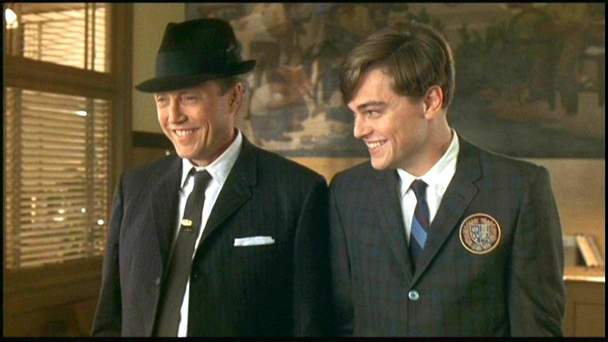
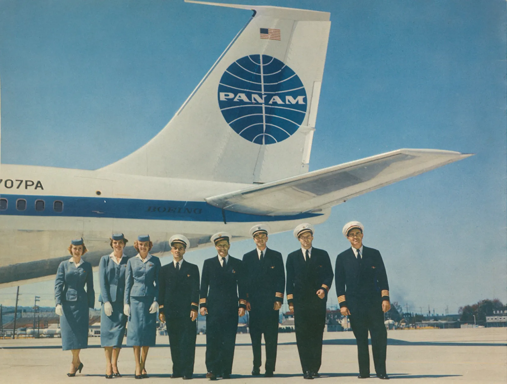

Der Film spielt in den 1960er Jahren. Zu dieser Zeit lernt Frank Abagnale Jr von seinem Vater das Geschick mit Menschen umzugehen und Welchen Einfluss Kleidung und gute Manieren auf andere haben. So beginnt Frank damit das gelernte in die Tat umzusetzen indem er sich Für mehrere Wochen als Französisch Aushilfslehrer ausgibt und an seiner Schule unterrichtet.
Als das Kleinunternehmen seines Vaters pleite geht reicht seine Mutter die Scheidung ein und Frank steht vor der Wahl, bei wem er aufwachsen möchte. Anstatt sich zwischen seinen Eltern zu entscheiden, macht er sich auf nach New York und versucht sich mit primitivem Scheckbetrug über Wasser zu halten. Erst nach einigen Fehlversuchen gelingt es ihm die Schecks glaubwürdig zu fälschen. Bereits in dieser Zeit zeigt sich sein Geschick, indem er Schecks auf weit Entfernte Banken ausstellt gelingt es ihm für mehrere Tage Schecks an einem Ort zu verwenden, bevor sein Betrug bemerkt wurde.
Im fällt auf, dass es schwer ist glaubwürdig höhere Schecks zu fälschen. Aus diesem Grund, und weil er die gesellschaftliche Stellung von Piloten bewundert, beginnt er sich als Pilot auszugeben. So gelingt es ihm Betrug mit immer höheren Summen zu begehen. Während seiner Zeit als Pilot gelingt es ihm mehrere tausend Meilen Kostenlos als Deadhead bei anderen Fluggesellschaften mitzufliegen.
